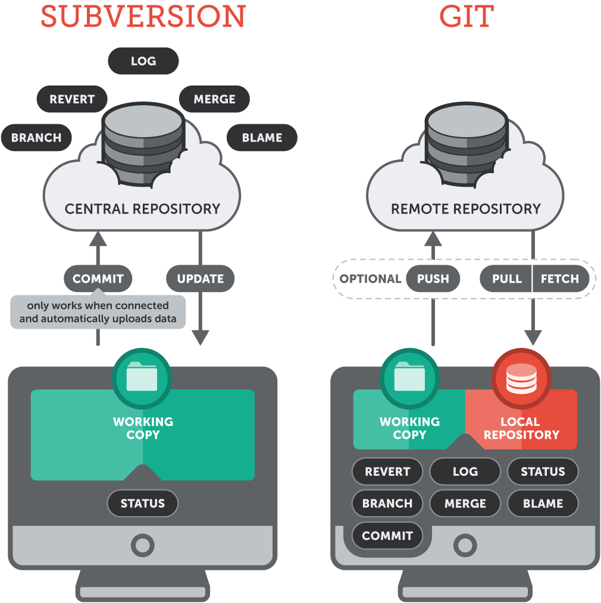
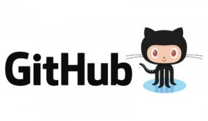
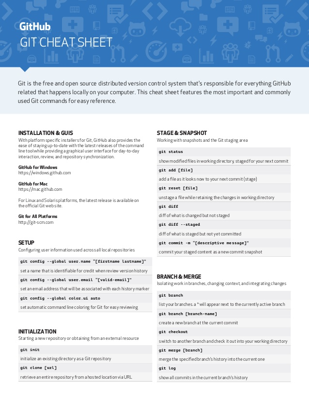
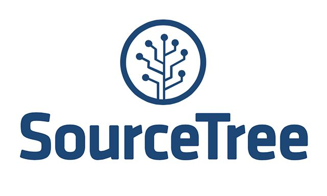
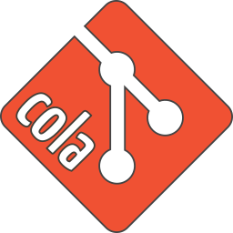
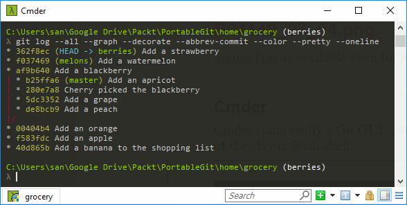
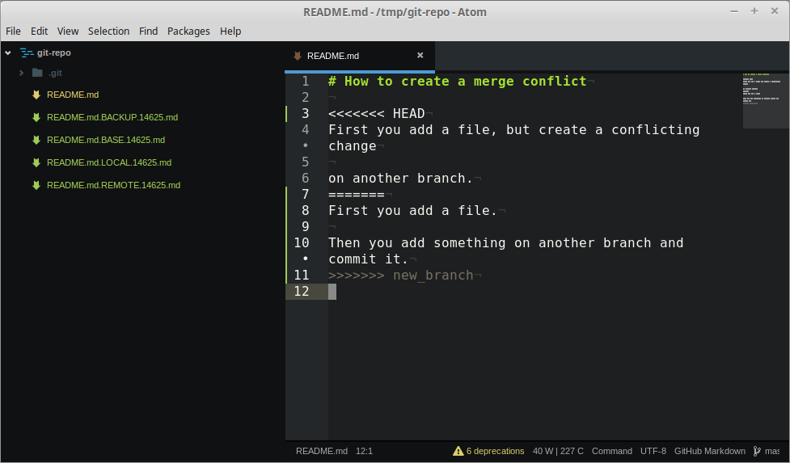

Git como gestor de trabajo colaborativo
GitHub: @juan-castano :: Software engineer
Agenda
- ¿Qué son los gestores de versiones?
- ¿Qué es git-scm?
- ¿Cómo gestiono un repositorio?
- Liberación de código a producción
- Consideraciones
- Workshop
¿Qué son los gestores de versiones?
VCS & SCM
Tipos de controles de versiones
Objetos en un repositorio (1)
- Repositorio
- Módulo
- Revisión (versión)
- Etiquetado (tagging)
- Línea base (baseline)
Objetos en un repositorio (2)
- Ramas
- Publicación
- Conflicto
- Cambio - Lista de cambios
- Integración ó mezcla (merge)
- Actualización (pull o fetch)
- Copia de trabajo (workspace or sandbox)
¿Qué es git-scm?
Descentralización y agilidad como principales características
¿De dónde nace git-scm?
¿Qué podemos rastrear con git-scm? ¿Y qué pasa con los demás archivos?
¿Y qué son esas secuencias de números y letras?
Recursos (1)

Recursos (2)
 Herramientas visuales
  Otros enlacesY cómo dejar de lado...
Recomendado cmder
¿Cómo gestiono un repositorio?
Configuración inicial
Definición del repositorio
$ cd my_project$ git initConfiguración de datos básicos
$ git config --global user.name "Juan Castaño"$ git config --global user.email "juan@mail.com"Agregar dirección del repositorio
$ git remote add origin [URL_HTTP]$ git remote -vExclusión de ficheros
Se debe modificar el fichero .gitignore
Todo repositorio rastreado por Git tiene su base de datos en la carpeta .git es una carpeta oculta
¿Cómo gestiono un repositorio?
Registro de cambios
Archivos en el escenario (stage)
Archivos modificados y que sus cambios fueron aceptados por el desarrollador
¿Cómo los agrego al stage?
$ git add [ nombre_fichero | . ]Archivos fuera del escenario (unstage)
Archivos a la espera de aceptación por parte de su creador
NO debe confundirse con los archivos excluidos
Restaurar los cambios de un archivo que está en el stage
A veces necesitamos deshacer los cambios aceptados para un archivo
NO confundir con reset o revert
$ git reset HEAD [ nombre_fichero | . ]Restaurar los cambios de un archivo que está fuera del stage
A veces necesitamos deshacer los cambios de un archivo o del proyecto porque desconocemos sus cambios
NO confundir con reset o revert
$ git checkout [ nombre_fichero | . ]¿Cómo gestiono un repositorio?
Descargando cambios
Clonando el repositorio
Cuando existe un proyecto en un servidor
$ git clone [URL]Descargando cambios
Cambios de otros desarrolladores y mezclando
$ git pull origin [nombre_rama]Descargando cambios
Objetos del repositorio remoto
$ git fetch origin¿Cómo gestiono un repositorio?
Separando el trabajo
Creación de ramas
Al comenzar un nuevo desarrollo
$ git branch [nombre_rama]$ git checkout -b [nombre_rama]Creación de ramas desde commit anterior
Realizar una nueva rama
$ git branch [nombre_rama] [id_commit]Navegando entre ramas
Los cambios que no han sido aceptados se mueven con el usuario a la rama hasta que sean aceptados en un commit
$ git checkout [nombre_rama_alterna]Eliminación de ramas
No se puede eliminar la rama en la que se encuentra actualmente. Es necesario moverse a otra
$ git branch -D [nombre_rama_eliminar]¿Cómo gestiono un repositorio?
Uniendo el trabajo
Uniendo ramas
Que mi código se agregue al igual que el de los demás
$ git checkout [nombre_rama_donde_quiero_merge]$ git merge [nombre_rama_donde_traera_cambios]Resolviendo conflictos
Tener cuidado al revisar los cambios a mezclar
¿Cómo gestiono un repositorio?
Etiquetando el trabajo
Agregar etiquetas como identificadores
Las etiquetas me permiten versionar e identificar fácilmente las liberaciones o correcciones de bugs
$ git tag -a "release-2.3.1" -m "Un mensaje cualquier"$ git tag -lMe permite definir líneas base de código

¿Cómo gestiono un repositorio?
Revisando el histórico de cambios
$ git log .$ git log --oneline¿Y las diferencias?
$ git diff .$ git diff [branch_1] [branch_2]$ git diff [commit_1] [commit_2]¿Qué sigue?
Investigar nuevos commandos u opciones de los comandos ya conocidos qué ocurre cuando se ejecuta
git commit --amend¿Cómo puedo echarle la culpa a alguien?
git blame¿Y si mi palabra es palabra de Dios?
git rebaseConsideraciones
- La rama principal de todo repositorio es master y no debería ser eliminada
- Siempre tener una rama base en local
- Pueden hacerse commits y crear ramas indiscriminadamente sin ejecutar un push al servidor remoto
- Las ramas en remoto y local pueden ser diferentes
- No debe llamarse siempre origin, esto se hace por convención
Diferentes repositorios locales de usuarios